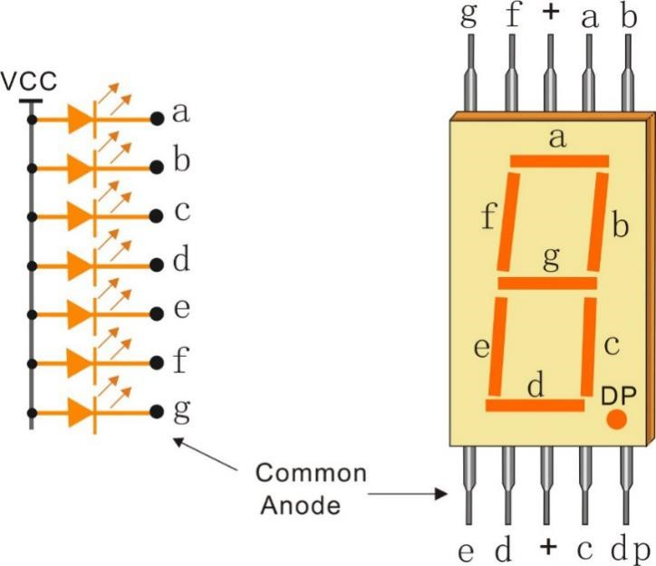

stateDiagram-v2
[*] --> IDLE
IDLE --> WAIT_PASSWORD: front_sensor='1'
IDLE --> IDLE: front_sensor='0'
WAIT_PASSWORD --> WAIT_PASSWORD: counter≤9
WAIT_PASSWORD --> RIGHT_PASS: counter>9 AND password correct
WAIT_PASSWORD --> WRONG_PASS: counter>9 AND password wrong
WRONG_PASS --> RIGHT_PASS: password correct
WRONG_PASS --> WRONG_PASS: password wrong
RIGHT_PASS --> STOP: front='1' AND back='1'
RIGHT_PASS --> IDLE: back='1' AND front='0'
RIGHT_PASS --> RIGHT_PASS: back='0'
STOP --> RIGHT_PASS: password correct
STOP --> STOP: password wrong
Car Parking System in VHDL
A Finite State Machine Approach
1 Introduction
This laboratory aims at the complete VHDL implementation of an automated car parking system. The work is in 2 phases. The first phase looks at a simplified car park where you will have to create the different parts of the design and finally write the VHDL code. All the work will be performed in simulation only so the sensors are considered perfect. The design exercizes on key concepts in digital design including:
- Finite State Machine (FSM) design
- Sequential and combinational logic
- Sensor-based control systems
- Password validation
- Visual feedback using LEDs and 7-segment displays (from a simulation point of view)
1.1 System Overview
The car parking system controls access to a parking facility with physical barriers using:
- Two sensors: Front sensor (detects approaching cars) and back sensor (detects cars passing through)
- Password input: Two 2-bit password inputs that must match a predefined code. The user has 4 buttons labelled A, B, C and D corresponding to the code ‘00’, ‘01’, ‘10’ and ‘11’ respectively (in practice you can see it as a single 4 bit password).
- Visual feedback: Red and green LEDs, plus two 7-segment displays
- Gate control logic: Implemented as a finite state machine
2 Architecture Analysis
2.1 Entity Declaration
This declaration is mandatory as you will be asked to pass it to other groups!
entity Car_Parking_System_VHDL is
port
(
clk,reset_n: in std_logic;
front_sensor, back_sensor: in std_logic;
password_1, password_2: in std_logic_vector(1 downto 0);
GREEN_LED,RED_LED: out std_logic;
HEX_1, HEX_2: out std_logic_vector(6 downto 0)
);
end Car_Parking_System_VHDL;2.1.1 Port Descriptions
| Port | Direction | Type | Description |
|---|---|---|---|
clk |
Input | std_logic | System clock |
reset_n |
Input | std_logic | Active-low asynchronous reset |
front_sensor |
Input | std_logic | Detects car at entrance |
back_sensor |
Input | std_logic | Detects car passing gate |
password_1 |
Input | 2-bit vector | First password digit |
password_2 |
Input | 2-bit vector | Second password digit |
GREEN_LED |
Output | std_logic | Success indicator |
RED_LED |
Output | std_logic | Wait/error indicator |
HEX_1 |
Output | 7-bit vector | First 7-segment display |
HEX_2 |
Output | 7-bit vector | Second 7-segment display |
Note: The correct password is: password_1 = "01" and password_2 = "10"
This design uses two separate 2-bit inputs that together form a 4-bit password (“0110” when concatenated). While functional, a better design approach would be to use a single 4-bit password input:
password: in std_logic_vector(3 downto 0); -- Single 4-bit passwordNote: As you may have notice there are no physical barrier but just a visual indicator.
2.2 Finite State Machine Design
First you need to create the FSM of the car park in order to control it properly.
2.2.1 State Definitions
The following is a possible implementation and is not mandatory.
The system could use five states:
type FSM_States is (IDLE, WAIT_PASSWORD, WRONG_PASS, RIGHT_PASS, STOP);2.2.2 State Descriptions
IDLE: System waiting for a car
- No LEDs active
- Displays off
- Monitors front sensor
WAIT_PASSWORD: Car detected, waiting for password entry
- Red LED on (steady)
- Display shows “En” (Enter password)
- Waits 10 clock cycles before checking password
WRONG_PASS: Incorrect password entered
- Red LED blinking
- Display shows “EE” (Error)
- Waits for correct password
RIGHT_PASS: Correct password, gate opening
- Green LED blinking
- Display shows “GO”
- Monitors sensors for car passage
STOP: Current car passing, next car detected
- Red LED blinking
- Display shows “SP” (Stop)
- Requires password from next car
2.2.3 State Transition Diagram
3 Code Implementation
In the following you have some hints on how to proceed. Your not required to follow exactly the same structure.
3.1 Internal Signals
signal current_state, next_state: FSM_States;
signal counter_wait: std_logic_vector(31 downto 0);
signal red_tmp, green_tmp: std_logic;current_state/next_state: FSM state registerscounter_wait: 32-bit counter for password input timingred_tmp/green_tmp: Temporary LED signals for blinking
3.2 Sequential Logic: State Register
process(clk, reset_n)
begin
if(reset_n='0') then
current_state <= IDLE;
elsif(rising_edge(clk)) then
current_state <= next_state;
end if;
end process;Purpose: Updates the current state on each clock cycle, with asynchronous reset to IDLE.
3.3 Combinational Logic: Next State Logic
The next state logic is purely combinational and determines state transitions based on:
- Current state
- Sensor inputs
- Password inputs
- Counter value
3.3.1 Key Transition Logic
From IDLE:
when IDLE =>
if(front_sensor = '1') then
next_state <= WAIT_PASSWORD;
else
next_state <= IDLE;
end if;From WAIT_PASSWORD:
when WAIT_PASSWORD =>
if(counter_wait <= x"00000009") then
next_state <= WAIT_PASSWORD;
else
if((password_1="01") and (password_2="10")) then
next_state <= RIGHT_PASS;
else
next_state <= WRONG_PASS;
end if;
end if;From RIGHT_PASS (Most Complex):
when RIGHT_PASS =>
if(front_sensor='1' and back_sensor = '1') then
next_state <= STOP; -- Next car detected while current passing
elsif(back_sensor= '1') then
next_state <= IDLE; -- Current car passed, no next car
else
next_state <= RIGHT_PASS; -- Gate remains open
end if;3.4 Counter Process
process(clk, reset_n)
begin
if(reset_n='0') then
counter_wait <= (others => '0');
elsif(rising_edge(clk)) then
if(current_state=WAIT_PASSWORD) then
counter_wait <= counter_wait + x"00000001";
else
counter_wait <= (others => '0');
end if;
end if;
end process;Purpose: Creates a 10-clock-cycle delay before checking the password, allowing time for input stabilization.
3.5 Output Process
process(clk)
begin
if(rising_edge(clk)) then
case(current_state) is
when IDLE =>
green_tmp <= '0';
red_tmp <= '0';
HEX_1 <= "1111111"; -- off
HEX_2 <= "1111111"; -- off
when WAIT_PASSWORD =>
green_tmp <= '0';
red_tmp <= '1';
HEX_1 <= "0000110"; -- E
HEX_2 <= "0101011"; -- n
-- ... (other states)
end case;
end if;
end process;3.5.1 7-Segment Display Encoding

We will be using a common anode architecture. Therefore in order to light up one of the segments the corresponding pin needs to be put to ground or ‘0’. So in this logic a ‘0’ is on and a ‘1’ is off.
We can provide some examples of how to encode the different values like:
| Character | Segments (gfedcba) | Hex Code | Binary |
|---|---|---|---|
| 0 | 1000000 | 0x40 | Displays “0” |
| E | 0000110 | 0x06 | Displays “E” |
| n | 0101011 | 0x2B | Displays “n” |
| P | 0001100 | 0x0C | Displays “P” |
| S | 0100100 | 0x24 | Displays “S” |
| 6 | 0000010 | 0x02 | Displays “6” |
| 5 | 0010010 | 0x12 | Displays “5” |
| Off | 1111111 | 0x7F | All segments off |
3.5.2 Output States Summary
| State | RED LED | GREEN LED | Display |
|---|---|---|---|
| IDLE | Off | Off | Off |
| WAIT_PASSWORD | On | Off | “En” |
| WRONG_PASS | Blinking | Off | “EE” |
| RIGHT_PASS | Off | Blinking | “GO” |
| STOP | Blinking | Off | “SP” |
4 Design Considerations
4.1 Timing Analysis
Password Check Delay: The system waits for 10 clock cycles (
counter_wait <= 9) before validating the password. This provides setup time for password inputs.LED Blinking: LEDs toggle on every clock edge in their respective states. The blink frequency equals the clock frequency.
4.2 Sensor Logic
The system uses two sensors to detect car position:
- Front sensor only: Car approaching → Enter password
- Back sensor only: Car passed through → Return to IDLE
- Both sensors: Current car passing + next car waiting → STOP state
This prevents multiple cars from entering without proper authentication.
5 Testing Strategy
5.1 Test Scenarios
You need to create the testbenches to validate the following scenarios:
5.1.1 Scenario 1: Normal Entry
- Assert
front_sensor = '1' - Wait 10+ clock cycles
- Input correct password:
password_1 = "01",password_2 = "10" - Verify: GREEN LED blinks, display shows “GO”
- Assert
back_sensor = '1' - Verify: System returns to IDLE
5.1.2 Scenario 2: Wrong Password
- Assert
front_sensor = '1' - Wait 10+ clock cycles
- Input wrong password: e.g.,
password_1 = "00",password_2 = "00" - Verify: RED LED blinks, display shows “EE”
- Input correct password
- Verify: System transitions to RIGHT_PASS
5.1.3 Scenario 3: Multiple Cars
- Car 1 enters with correct password → RIGHT_PASS
- Before
back_sensor = '1', assertfront_sensor = '1'again - Verify: System enters STOP state
- Input correct password for car 2
- Verify: Both cars processed correctly
5.1.4 Scenario 4: Reset
- Put system in any state
- Assert
reset_n = '0' - Verify: System immediately returns to IDLE
- All outputs reset
5.2 Testbench Development
You will develop a VHDL testbench to verify these scenarios. Your testbench should:
- Instantiate the
Car_Parking_System_VHDLentity - Generate a clock signal (suggested period: 20 ns for 50 MHz)
- Apply reset at simulation start
- Create stimulus for all test scenarios
- Monitor and verify outputs
- Use assertions or report statements for automated checking
5.2.1 Suggested Testbench Structure
-- Entity with no ports (testbench)
entity tb_car_parking is
end tb_car_parking;
architecture testbench of tb_car_parking is
-- Component declaration
component Car_Parking_System_VHDL is
port (
-- ports here
);
end component;
-- Test signals
signal clk_tb : std_logic := '0';
signal reset_n_tb : std_logic := '0';
-- ... other signals
-- Clock period
constant clk_period : time := 20 ns;
begin
-- Clock generation
clk_tb <= not clk_tb after clk_period/2;
-- DUT instantiation
DUT: Car_Parking_System_VHDL
port map (
clk => clk_tb,
-- ... other port maps
);
-- Stimulus process
stimulus: process
begin
-- Test scenarios here
wait;
end process;
end testbench;6 Exercises
Once you have something that is working ask other groups for their testbenches and confront your implementations and results.
Add an extra state called
TIMEOUTthat activates if password isn’t entered within 10 clock cycles. think of what should happen and how to handle it.Implement a prescaler to make LEDs blink at 1 Hz instead of at clock frequency.
Add a
car_countoutput that tracks how many cars have entered.
7 Simulation and Analysis
7.1 Using GHDL
You are asked to create your vhdl code and test it using GHDL.
#############################################################################
# GHDL HELP #
# #
# -a [OPTS] FILEs Analyze FILEs #
# -e [OPTS] UNIT [ARCH] Elaborate UNIT #
# -r,--elab-run [OPTS] UNIT [ARCH] [RUNOPTS] Run UNIT #
# -c [OPTS] FILEs -r UNIT [ARCH] [RUNOPTS] Compile, elaborate and run UNIT#
# -m [OPTS] UNIT [ARCH] Make UNIT #
# --gen-makefile [OPTS] UNIT [ARCH] Generate a Makefile for UNIT #
# --dispconfig Disp tools path #
# --run-help Disp help for RUNOPTS options #
# -i [OPTS] FILEs Import units of FILEs #
# -s [OPTS] FILEs Check syntax of FILEs #
# -d or --dir Disp contents of the work library #
# -f FILEs Disp units in FILES #
# --clean Remove generated files #
# --remove Remove generated files and library file #
# --copy Copy work library to current directory #
# --disp-standard Disp std.standard in pseudo-vhdl #
# --chop [OPTS] FILEs Chop FILEs #
# --lines FILEs Precede line with its number #
# --pp-html FILEs Pretty-print FILEs in HTML #
# --xref-html FILEs Display FILEs in HTML with xrefs #
# --xref FILEs Generate xrefs #
# -h or --help [CMD] Disp this help or [help on CMD] #
# -v or --version Disp ghdl version #
# --options-help Disp help for analyzer options #
#############################################################################
# To display the options of a GHDL program, #
# run your programm with the --help option. #
# Also see --options-help for analyzer options. #
#############################################################################For Windows users:
remember to add your ghdl.exe in the path or use:
Set-Alias -Name ghdl -Value C:\....your path\ghdl.exe7.1.1 Compilation Steps
#analyzes your file and let you know if there are issues
ghdl -a YOUR_DESIGN.vhd
#compiles both files and generates object: work-obj93.cf
ghdl -c YOUR_TESTBENCH.vhd YOUR_DESIGN.vhd
# [OPTIONAL] displays the entity and architectures compiled
ghdl -d7.1.2 Simulation Execution
The first thing you need to do is guess the length needed to test your design and replace it with the appropriate value in XXXXX.
ghdl -r YOUR_TESTBENCH_ENTITY --vcd=NAME_OF_SIMULTION.vcd --stop-time=XXXXXms
#execute the testbench ENTITY and output all the signals into the file NAME_OF_SIMULTION.vcd
#and stops after XXXXXms if the simulation has not finished beforePay attention that you must use the entity created in the previous step and not the vhd file.
You might need to repeat the compile several times before getting a working simulation.
7.1.3 Waveform Viewing
You can use GTKWAVE or the VAPORVIEW extension in VsCode.
8 Conclusion
This car parking system demonstrates practical FSM design principles:
- Clear state definition with distinct behaviors
- Robust sensor handling to manage multiple cars
- User feedback through LEDs and displays
- Security via password validation
The design is synthesizable and can be implemented on FPGA development boards with appropriate I/O mapping.
9 References
- IEEE Standard VHDL Language Reference Manual (IEEE Std 1076)
- FPGA Prototyping by VHDL Examples - Pong P. Chu
- Digital Design - M. Morris Man, Michael D. Ciletti
9.1 Potential Improvements (for a future implementation)
You can suggest some improvements of your own
- Blink Rate Control: Add a prescaler to slow down LED blinking for visual clarity
- Password Attempts: Limit wrong password attempts
- Timeout: Add timeout in WAIT_PASSWORD state
- Debouncing: Add debounce logic for sensor inputs
- Variable Password: Make password programmable rather than hardcoded